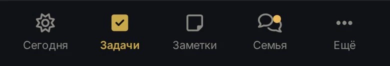
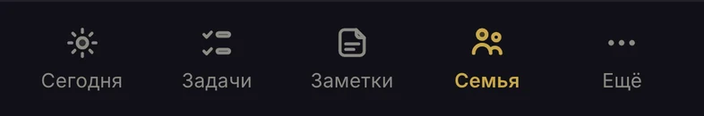
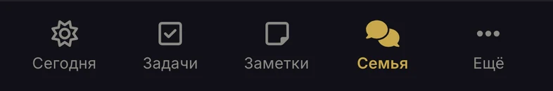
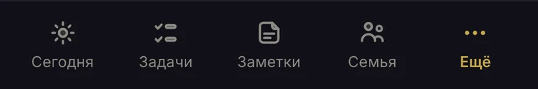

Макет Abacus (снимок, 390 px)
Сейчас
Как у Abacus — в приложении
Активна «Сегодня»
Активны «Задачи»

Активны «Заметки»
Активна «Семья»


Активно «Ещё»

Замер по пикселям снимков, габарит рисунка в css px (Сегодня · Задачи · Заметки · Семья · Ещё)
Макет Abacus: 19×19 · 16.5×17 · 16.5×17 · 24×19 · 16×4.5
Сейчас: 17×17 · 16×14 · 15.3×16.3 · 16.7×14.7 · 14.7×3.3
Как у Abacus в приложении: 19×19 · 16.7×16.7 · 16.7×16.7 · 24×19 · 16×4 — совпадает с макетом с точностью до сглаживания
Зона касания вкладки в обоих вариантах та же: 75×52 px на 393, 61×52 px на 320. Цвета те же: золото у активной, серый у остальных.